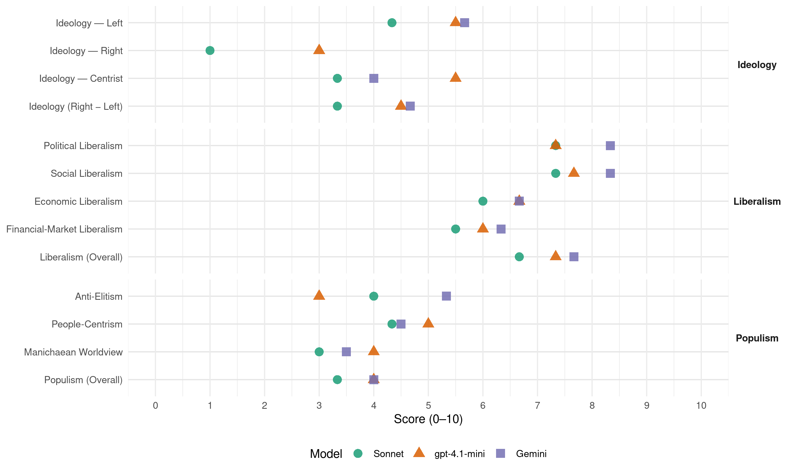

ALIANZA (Argentina, 1999)
manifesto_id 150032_199910
Get full text: This site shows derived annotations and short verbatim quotes only. The full manifesto text is © Manifesto Project / WZB — obtain it via manifesto-project.wzb.eu using the manifesto_id above.
Headline scores
| Dimension | Sonnet | gpt-4.1-mini | Gemini |
|---|---|---|---|
| Populism (Overall) | 3.3 | 4.0 | 4.0 |
| Anti-Elitism | 4.0 | 3.0 | 5.3 |
| People-Centrism | 4.3 | 5.0 | 4.5 |
| Manichaean Worldview | 3.0 | 4.0 | 3.5 |
| Ideology (Right − Left) | 3.3 | 4.5 | 4.7 |
| Liberalism (Overall) | 6.7 | 7.3 | 7.7 |
| Political Liberalism | 7.3 | 7.3 | 8.3 |
| Social Liberalism | 7.3 | 7.7 | 8.3 |
| Economic Liberalism | 6.0 | 6.7 | 6.7 |
| Financial-Market Liberalism | 5.5 | 6.0 | 6.3 |
Evidence per dimension
Economic Liberalism
Gemini · score 7.0 · verified · chunk 1
“garantizar condiciones de mayor competencia”
En tercer lugar, la Alianza garantizará condiciones de mayor competencia en todos los mercados, a través de la utilización
Gemini · score 6.0 · verified · chunk 2
“fomentará su desarrollo según el principio de libertad de mercado”
al servicio de la población. El Estado fomentará su desarrollo según el principio de libertad de mercado y no a favor (por medios directos o indirectos)
Gemini · score 7.0 · verified · chunk 3
“eliminación de los subsidios a la exportación”
agrario, la Argentina pugnará por la eliminación de los subsidios a la exportación, el disciplinamiento de las medidas
gpt-4.1-mini · score 7.0 · verified · chunk 1
“competitividad de nuestra economía”
La Alianza propone eliminar los impuestos más distorsivos, como los de ingresos brutos, y reemplazarios por gravámenes más eficientes. Asimismo, la consolidación de los equilibrios macroeconómicos, en especial en lo relativo a las finanzas públicas, generará un efecto positivo en el riesgo país.
gpt-4.1-mini · score 6.0 · verified · chunk 2
“Estimular la inversión privada y el ahorro destinado a vivienda.”
Vivienda La vivienda es un bien social indispensable y un derecho para todos. Las políticas activas e inversores en el sector tienen un efecto multiplicador sobre la economía y la sociedad, contribuyen a la redistribución equitativa del ingreso, la generación de empleo, la integración y el desarrollo social. Políticas Estimular la inversión privada y el ahorro destinado a vivienda. Implementar una política descentralizada que articule los requerimientos de la comunidad con una amplia participación de los organismos nacionales, provinciales y municipales y de los sectores comprometidos.
gpt-4.1-mini · score 7.0 · verified · chunk 3
“promover la complementaciòn del Estado con la actividad privada”
También promover la complementaciòn del Estado con la actividad privada y la integración de los institutos de ciencia y tecnología de las Fuerzas Armadas con otros similares del sistema científico nacional y extranjero.
Sonnet · score 6.0 · verified · chunk 1
“mayor competencia en todos los mercados”
la Alianza garantizará condiciones de mayor competencia en todos los mercados, a través de la utilización intensiva de las políticas de defensa de la competencia
Sonnet · score 6.0 · mixed · chunk 2
“Promover la competencia donde sea posible”
Promover la competencia donde sea posible, genere condiciones de control de abusos en las situaciones obligadas de monopolio, fije y controle tarifas, oriente inversiones, incentive la eficiencia.
Sonnet · score 6.0 · verified · chunk 3
“eliminación de los subsidios a la exportación”
la Argentina pugnará por la eliminación de los subsidios a la exportación, el disciplinamiento de las medidas no tarifadas, picos tarifados
Financial-Market Liberalism
Gemini · score 7.0 · verified · chunk 1
“competencia en todos los segmentos del mercado financiero”
Impulsar activamente la competencia en todos los segmentos del mercado financiero, en particular a través de exigencias más estrictas
Gemini · score 5.0 · verified · chunk 2
“Aumentar la competencia en el sistema de capitalización”
Permitir que los afiliados a las AFJP puedan optar por el régimen público estatal. Aumentar la competencia en el sistema de capitalización, la transparencia y la información
Gemini · score 7.0 · verified · chunk 3
“disminuir el riesgo de desestabilización de los mareados y la volatilidad de los flujos financieros”
establecer mecanismos de seguridad económica internacional para disminuir el riesgo de desestabilización de los mareados y la volatilidad de los flujos financieros. El gobierno de la Alianza
gpt-4.1-mini · score 6.0 · verified · chunk 1
“subsidiar la tasa de interés activa para los préstamos a las PYMEs”
Se retomará y ampliará la iniciativa de subsidiar la tasa de interés activa para los préstamos a las PYMEs con fondos presupuestarios, distribuyendo el subsidio entre los bancos de acuerdo a la menor tasa activa propuesta.
gpt-4.1-mini · score 6.0 · verified · chunk 2
“Aumentar la competencia en el sistema de capitalización, la transparencia y la información para los aportantes.”
Sistema Jubilatorio El envejecimiento poblacional, el trabajo precario, el trabajo en negro, la inestabilidad laboral y la falta de trabajo han agravado la cuestión jubilatoria, generando una masa creciente de población sin perspectiva futura de contar con tal beneficio. Políticas Reinstalar una mayor capacidad de resolución desde el poder del Estado. Defender y jerarquizar el componente solidario estatal del régimen mixto, expresado hoy en la PBU, PC y la PAP, financiado con aportes, contribuciones y otras fuentes tributarias. Permitir que los afiliados a las AFJP puedan optar por el régimen público estatal. Aumentar la competencia en el sistema de capitalización, la transparencia y la información para los aportantes.
Sonnet · score 5.0 · mixed · chunk 1
“competencia en todos los segmentos del mercado financiero”
Impulsar activamente la competencia en todos los segmentos del mercado financiero, en particular a través de exigencias más estrictas de transparencia
Sonnet · score 6.0 · verified · chunk 2
“inyección de competencia y de transparencia en el mercado de AFJPs”
Lo honraremos a través de una decidida política de inyección de competencia y de transparencia en el mercado de AFJPs, que limite las posibilidades de cartelización y concentración de la industria.
Sonnet · score 5.0 · verified · chunk 3
“volatilidad de los flujos financieros”
La Argentina participará en las iniciativas orientadas a establecer mecanismos de seguridad económica internacional para disminuir el riesgo de desestabilización de los mercados y la volatilidad de los flujos financieros
Political Liberalism
Gemini · score 8.0 · verified · chunk 1
“garantizar la ’seguridad jurídica”
fortalecer la iniciativa privada. Para ello, es necesario, en un marco de cohesión y consenso social, garantizar la ’seguridad jurídica, preservar los equilibrios
Gemini · score 8.0 · verified · chunk 2
“respetar los principios de autonomía de gobierno y académica”
una nueva la Ley de Educación Superior que respete los principios de autonomía de gobierno y académica de las universidades así como el principio constitucional
Gemini · score 9.0 · verified · chunk 3
“Vigencia plena de los derechos civiles y políticos”
Preservar y defender la democracia Promover la paz Afirmar la dignidad de la persona y sus derechos esenciales Vigencia plena de los derechos civiles y políticos. Desenvolvimiento prioritario
gpt-4.1-mini · score 7.0 · verified · chunk 1
“garantizar la ’seguridad jurídica, preservar los equilibrios macroeconómicos”
Para ello, es necesario, en un marco de cohesión y consenso social, garantizar la ’seguridad jurídica, preservar los equilibrios macroeconómicos Y crear un horizonte de previsibilidad a largo plazo. Sin embargo, confianza y credibilidad no bastan.
gpt-4.1-mini · score 7.0 · verified · chunk 2
“Garantizar la igualdad de oportunidades educativas a todos los niños, jóvenes y adultos, con una docencia altamente profesional y dignamente retribuida.”
Educación Proyectar a la educación como base de la sociedad del conocimiento y la democracia, garantizando su incidencia en la inserción de la Argentina en Mercosur y en el mundo. Garantizar la igualdad de oportunidades educativas a todos los niños, jóvenes y adultos, con una docencia altamente profesional y dignamente retribuida. Formar ciudadanos democráticos y capacitados en los mejores niveles científicos, culturales y tecnológicos.
gpt-4.1-mini · score 8.0 · verified · chunk 3
“Preservar y defender la democracia”
La Alianza sustenta sus políticas públicas de Derechos Humanos en los siguientes principios: Preservar y defender la democracia Promover la paz Afirmar la dignidad de la persona y sus derechos esenciales
Sonnet · score 6.0 · verified · chunk 1
“transparencia tanto en su planificación como en su ejecución”
medidas que aseguren eficiencia y transparencia tanto en su planificación como en su ejecución. La disminución de la evasión y el fin del despilfarro
Sonnet · score 8.0 · verified · chunk 2
“Preservar y defender la democracia”
La Alianza sustenta sus políticas públicas de Derechos Humanos en los siguientes principios: Preservar y defender la democracia. Promover la paz. Afirmar la dignidad de la persona.
Sonnet · score 8.0 · verified · chunk 3
“Preservar y defender la democracia”
La Alianza sustenta sus políticas públicas de Derechos Humanos en los siguientes principios: Preservar y defender la democracia Promover la paz Afirmar la dignidad de la persona
Liberalism (Overall)
Gemini · score 8.0 · verified · chunk 1
“garantizar la ’seguridad jurídica”
fortalecer la iniciativa privada. Para ello, es necesario, en un marco de cohesión y consenso social, garantizar la ’seguridad jurídica, preservar los equilibrios
Gemini · score 7.0 · verified · chunk 2
“Vigencia plena de los derechos civiles y políticos”
Vigencia plena de los derechos civiles y políticos. Desenvolvimiento prioritario de los derechos culturales
Gemini · score 8.0 · verified · chunk 3
“Vigencia plena de los derechos civiles y políticos”
Preservar y defender la democracia Promover la paz Afirmar la dignidad de la persona y sus derechos esenciales Vigencia plena de los derechos civiles y políticos. Desenvolvimiento prioritario
gpt-4.1-mini · score 7.0 · verified · chunk 1
“garantizar la ’seguridad jurídica, preservar los equilibrios macroeconómicos”
Para ello, es necesario, en un marco de cohesión y consenso social, garantizar la ’seguridad jurídica, preservar los equilibrios macroeconómicos Y crear un horizonte de previsibilidad a largo plazo. Sin embargo, confianza y credibilidad no bastan.
gpt-4.1-mini · score 7.0 · verified · chunk 2
“Garantizar la igualdad de oportunidades educativas a todos los niños, jóvenes y adultos, con una docencia altamente profesional y dignamente retribuida.”
Educación Proyectar a la educación como base de la sociedad del conocimiento y la democracia, garantizando su incidencia en la inserción de la Argentina en Mercosur y en el mundo. Garantizar la igualdad de oportunidades educativas a todos los niños, jóvenes y adultos, con una docencia altamente profesional y dignamente retribuida. Formar ciudadanos democráticos y capacitados en los mejores niveles científicos, culturales y tecnológicos.
gpt-4.1-mini · score 8.0 · verified · chunk 3
“Preservar y defender la democracia”
La Alianza sustenta sus políticas públicas de Derechos Humanos en los siguientes principios: Preservar y defender la democracia Promover la paz Afirmar la dignidad de la persona y sus derechos esenciales
Sonnet · score 6.0 · verified · chunk 1
“seguridad jurídica, preservar los equilibrios macroeconómicos”
garantizar la seguridad jurídica, preservar los equilibrios macroeconómicos Y crear un horizonte de previsibilidad a largo plazo
Sonnet · score 7.0 · verified · chunk 2
“Expresa los valores de la libertad, del pluralismo, de la tolerancia”
Expresa los valores de la libertad, del pluralismo, de la tolerancia y de la participación, y defiende con inteligencia la identidad que, en el caso argentino, es una original suma de diversidades.
Sonnet · score 7.0 · verified · chunk 3
“Vigencia plena de los derechos civiles y políticos”
La Alianza sustenta sus políticas públicas de Derechos Humanos en los siguientes principios: Vigencia plena de los derechos civiles y políticos
Anti-Elitism
Gemini · score 4.0 · verified · chunk 1
“beneficio de los amigos del poder de turno”
terminar con el uso político que se ie ha dado para beneficio de los amigos del poder de turno y transformar este banco
Gemini · score 7.0 · verified · chunk 2
“el menemismo ha sido, desde el gobierno, el promotor de la concentración económica”
En la Argentina de la última década el menemismo ha sido, desde el gobierno, el promotor de la concentración económica, de la inequidad social y de una política exterior sumisa
Gemini · score 5.0 · verified · chunk 3
“El modelo concentrados aplicado por el gobierno”
Derechos humanos El modelo concentrados aplicado por el gobierno a partir de 1989 ha producido secuelas
gpt-4.1-mini · score 3.0 · verified · chunk 1
“la política económica de la gestión saliente”
quienes fueron perjudicados por la política económica de la gestión saliente los desocupados estructurales, los sectores medios expulsados del ámbito productivo por reformas estructurales que se ilevaron adelanté con graves errores de ejecución e insensibilidad social, Porque no es apenas con políticas fiscales asistencialistas, como cree el actual oficialismo, que estaremos en condiciones de responder adecuadamente a las iegítimas demandas de quienes hoy sufren las variadas formas de la exclusión.
gpt-4.1-mini · score 3.0 · verified · chunk 2
“el menemismo ha sido, desde el gobierno, el promotor de la concentración económica, de la inequidad social y de una política exterior sumisa y dependiente. Entre nosotros ha proliferado la corrupción pública y privada, y se han fortalecido el individualismo egoísta y el sálvese quien pueda.”
La cultura es, simbólicamente, la defensa de nuestra soberanía. En la Argentina de la última década el menemismo ha sido, desde el gobierno, el promotor de la concentración económica, de la inequidad social y de una política exterior sumisa y dependiente. Entre nosotros ha proliferado la corrupción pública y privada, y se han fortalecido el individualismo egoísta y el sálvese quien pueda. Ninguno de los problemas estructurales del país ha quedado resuelto, a pesar del la supuesta “inserción en el mundo” que reivindica el gobierno.
Sonnet · score 4.0 · verified · chunk 1
“uso político que se le ha dado para beneficio de los amigos del poder de turno”
Esta reforma del BNA que propone la Alianza implica terminar con el uso político que se ie ha dado para beneficio de los amigos del poder de turno y transformar este banco
Sonnet · score 5.0 · verified · chunk 2
“el menemismo ha sido, desde el gobierno, el promotor de la concentración económica”
En la Argentina de la última década el menemismo ha sido, desde el gobierno, el promotor de la concentración económica, de la inequidad social y de una política exterior sumisa y dependiente.
Sonnet · score 3.0 · verified · chunk 3
“modelo concentrados aplicado por el gobierno”
El modelo concentrados aplicado por el gobierno a partir de 1989 ha producido secuelas sociales que es urgente resolver, como el desempleo generalizado
Ideology — Centrist
Gemini · score 4.0 · verified · chunk 1
“servir a todos los ciudadanos”
un Estado mejor preparado para servir a todos los ciudadanos y una mayor competitividad de la economía
gpt-4.1-mini · score 5.0 · verified · chunk 1
“en un marco de cohesión y consenso social”
Para ello, es necesario, en un marco de cohesión y consenso social, garantizar la ’seguridad jurídica, preservar los equilibrios macroeconómicos Y crear un horizonte de previsibilidad a largo plazo.
gpt-4.1-mini · score 6.0 · verified · chunk 2
“Vamos a ser el gobierno de la gente, y no el gobierno de los amigos del Presidente.”
La Presidencia: el núcleo de un gobierno para la gente La reconstrucción del Estado va a empezar por la cúpula: la Presidencia de la Nación. Ésta no puede ser la sede de un Poder Ejecutivo a escala de los intereses personales del mandatario de turno. Vamos a ser el gobierno de la gente, y no el gobierno de los amigos del Presidente. Por eso la Presidencia será un núcleo dinámico dedicado a la toma de decisiones y al monitoreo de la ejecución de las políticas, con la asistencia permanente de una Jefatura de Gabinete jerarquizada a tales efectos.
Sonnet · score 3.0 · verified · chunk 1
“gestión activa que apunte a resolver”
Para la Alianza se trata, entonces, de llevar a cabo una gestión activa que apunte a resolver esta acuciante realidad.
Sonnet · score 4.0 · verified · chunk 2
“gobierno de la gente, y no el gobierno de los amigos”
Vamos a ser el gobierno de la gente, y no el gobierno de los amigos del Presidente. Por eso la Presidencia será un núcleo dinámico.
Sonnet · score 3.0 · verified · chunk 3
“intervención y control de la comunidad”
Promover la aplicación de recursos y la implementación de políticas sociales destinadas a la prevención del delito, a través de los gobiernos municipales con intervención y control de la comunidad
Ideology — Left
Gemini · score 5.0 · verified · chunk 1
“verdadero crecimiento con equidad”
proteger y fortalecer la producción y el empieo nacionales, para lograr así un verdadero crecimiento con equidad.
Gemini · score 6.0 · verified · chunk 2
“promotor de la concentración económica, de la inequidad social”
el menemismo ha sido, desde el gobierno, el promotor de la concentración económica, de la inequidad social y de una política exterior sumisa
Gemini · score 6.0 · verified · chunk 3
“desempleo generalizado, la precarización ’de las relaciones”
producido secuelas sociales que es urgente resolver, como el desempleo generalizado, la precarización ’de las relaciones laborales, la crisis de los sistemas de salud
gpt-4.1-mini · score 6.0 · verified · chunk 1
“redistribución de la riqueza más equitativa”
impulsar la creación continua de redes de difusión del desarrollo. Con la promoción activa de las PyMEs y de los microemprendimientos lograremos multiplicar las respuestas creativas a los desafíos actuales de la competencia e impulsar una distribución de la riqueza más equitativa y mejor repartida territorialmente, a la vez que haremos un uso intensivo e integral de las potencialidades de crecimiento que —aunque relegadas- hoy posee nuestro país.
gpt-4.1-mini · score 5.0 · verified · chunk 2
“La Alianza considera indispensable profesionalizar, jerarquizar y equipar a las fuerzas policiales; hacer que las cárceles se transformen en instituciones de readaptación; llenar lagunas de la ley penal y corregir el régimen procesal para garantizar que los delincuentes más peligrosos no gocen de los beneficios de la excarcelación.”
La ALIANZA sabe que no podrán enfrentarse exitosamente los problemas económicos de la Nación y los problemas de seguridad personal si no se atacan simultáneamente las causas que se alojan en las desigualdades sociales, en la frustración y en los padecimientos que ellas generan. Cuando una sociedad expulsa a cientos de miles de personas, privándolas así de cualquier beneficio de la vida en común, crea condiciones que en algún momento se traducen en violencia y criminalidad. La ALIANZA considera indispensable profesionalizar, jerarquizar y equipar a las fuerzas policiales; hacer que las cárceles se transformen en instituciones de readaptación; llenar lagunas de la ley penal y corregir el régimen procesal para garantizar que los delincuentes más peligrosos no gocen de los beneficios de la excarcelación.
Sonnet · score 4.0 · verified · chunk 1
“distribución de la riqueza más equitativa”
impulsar una distribución de la riqueza más equitativa y mejor repartida territorialmente, a la vez que haremos un uso intensivo e integral
Sonnet · score 5.0 · verified · chunk 2
“promotor de la concentración económica, de la inequidad social”
el menemismo ha sido, desde el gobierno, el promotor de la concentración económica, de la inequidad social y de una política exterior sumisa y dependiente.
Sonnet · score 4.0 · verified · chunk 3
“desempleo generalizado, la precarización de las relaciones laborales”
ha producido secuelas sociales que es urgente resolver, como el desempleo generalizado, la precarización de las relaciones laborales, la crisis de los sistemas de salud
Ideology (Right − Left)
Gemini · score 4.0 · verified · chunk 1
“beneficio de los amigos del poder de turno”
terminar con el uso político que se ie ha dado para beneficio de los amigos del poder de turno y transformar este banco
Gemini · score 6.0 · verified · chunk 2
“promotor de la concentración económica, de la inequidad social”
el menemismo ha sido, desde el gobierno, el promotor de la concentración económica, de la inequidad social y de una política exterior sumisa
Gemini · score 4.0 · verified · chunk 3
“desempleo generalizado, la precarización ’de las relaciones”
producido secuelas sociales que es urgente resolver, como el desempleo generalizado, la precarización ’de las relaciones laborales, la crisis de los sistemas de salud
gpt-4.1-mini · score 5.0 · verified · chunk 1
“la política económica de la gestión saliente”
quienes fueron perjudicados por la política económica de la gestión saliente los desocupados estructurales, los sectores medios expulsados del ámbito productivo por reformas estructurales que se ilevaron adelanté con graves errores de ejecución e insensibilidad social, Porque no es apenas con políticas fiscales asistencialistas, como cree el actual oficialismo, que estaremos en condiciones de responder adecuadamente a las iegítimas demandas de quienes hoy sufren las variadas formas de la exclusión.
gpt-4.1-mini · score 4.0 · verified · chunk 2
“el menemismo ha sido, desde el gobierno, el promotor de la concentración económica, de la inequidad social y de una política exterior sumisa y dependiente.”
La cultura es, simbólicamente, la defensa de nuestra soberanía. En la Argentina de la última década el menemismo ha sido, desde el gobierno, el promotor de la concentración económica, de la inequidad social y de una política exterior sumisa y dependiente. Entre nosotros ha proliferado la corrupción pública y privada, y se han fortalecido el individualismo egoísta y el sálvese quien pueda.
Sonnet · score 3.0 · verified · chunk 1
“crecimiento con equidad”
proteger y fortalecer la producción y el empieo nacionales, para lograr así un verdadero crecimiento con equidad
Sonnet · score 4.0 · verified · chunk 2
“inequidades y las urgencias de la población”
Los objetivos primordiales de todas las acciones de la Alianza en esta materia serán atender las inequidades y las urgencias de la población actualmente jubilada.
Sonnet · score 3.0 · verified · chunk 3
“modelo concentrados aplicado por el gobierno”
El modelo concentrados aplicado por el gobierno a partir de 1989 ha producido secuelas sociales que es urgente resolver
Ideology — Right
gpt-4.1-mini · score 3.0 · verified · chunk 1
“defensa de la producción nacional”
se aplicarán cláusulas de salvaguardias en defensa de la producción nacional. En estos casos de existir dudas con respecto a la aplicación de estos criterios se priorizará la defensa de nuestra producción Promover alianzas estratégicas con las empresas de los países del Mercosur para mejorar la capacitación tecnológica y organizacional y expandir las exportaciones hacia terceros países
Sonnet · score 1.0 · verified · chunk 1
“defensa de la producción nacional”
se priorizará la defensa de nuestra producción. Promover alianzas estratégicas con las empresas de los países del Mercosur
Sonnet · score 1.0 · verified · chunk 2
“política exterior sumisa y dependiente”
el menemismo ha sido, desde el gobierno, el promotor de la concentración económica, de la inequidad social y de una política exterior sumisa y dependiente.
Sonnet · score 1.0 · verified · chunk 3
“defensa de la soberanía, la amistad con todas”
La política exterior de la Alianza se basará en la independencia de sus decisiones, la defensa de la soberanía, la amistad con todas las naciones
Manichaean Worldview
Gemini · score 2.0 · verified · chunk 1
“lucha sin cuartel contra la gran evasión”
La ALIANZA está resuelta a dar una lucha sin cuartel contra la gran evasión. Sin temores ni claudicaciones.
Gemini · score 5.0 · verified · chunk 2
“no sea un botín político para el reparto ilegítimo”
funcione como debe, y que no sea un botín político para el reparto ilegítimo del dinero público. Sus autoridades deben ser técnicos
gpt-4.1-mini · score 4.0 · verified · chunk 1
“exclusión”
adecuadamente a las iegítimas demandas de quienes hoy sufren las variadas formas de la exclusión. Pero para la solución de estas injusticias se impone, como condición necesaria, el objetivo de encaminar a nuestro país en un sendero de crecimiento sostenido
gpt-4.1-mini · score 4.0 · verified · chunk 2
“Ningún delincuente formará parte del gobierno de la Alianza. Si algún funcionario delinquiera en el ejercicio de sus deberes será separado de su cargo.”
Ningún delincuente formará parte del gobierno de la Alianza. Si algún funcionario delinquiera en el ejercicio de sus deberes será separado de su cargo. Si algún funcionario fuera acusado de un delito, será suspendido en sus tareas y deberá probar su inocencia como requisito indispensable para conservar el cargo. Todo funcionario público tiene la responsabilidad legal y el deber moral de rendir cuenta de sus actos; quien no lo haga de manera adecuada y satisfactoria será separado de su cargo.
Sonnet · score 3.0 · verified · chunk 1
“lucha sin cuartel contra la gran evasión”
La ALIANZA está resuelta a dar una lucha sin cuartel contra la gran evasión. Sin temores ni claudicaciones.
Sonnet · score 4.0 · verified · chunk 2
“ha proliferado la corrupción pública y privada”
Entre nosotros ha proliferado la corrupción pública y privada, y se han fortalecido el individualismo egoísta y el sálvese quien pueda.
Sonnet · score 2.0 · verified · chunk 3
“secuelas sociales que es urgente resolver”
El modelo concentrados aplicado por el gobierno a partir de 1989 ha producido secuelas sociales que es urgente resolver, como el desempleo generalizado
People-Centrism
Gemini · score 3.0 · verified · chunk 1
“servir a todos los ciudadanos”
un Estado mejor preparado para servir a todos los ciudadanos y una mayor competitividad de la economía
Gemini · score 6.0 · verified · chunk 2
“Vamos a ser el gobierno de la gente”
intereses personales del mandatario de turno. Vamos a ser el gobierno de la gente, y no el gobierno de los amigos del Presidente.
gpt-4.1-mini · score 5.0 · verified · chunk 1
“aprovechar las capacidades de todos los trabajadores del país”
instrumentar una política de generación de empleos productivos, estables y de calidad. Una política que permita aprovechar las capacidades de todos los trabajadores del país y construir con ellas tina economía con pleno empleo.
gpt-4.1-mini · score 5.0 · verified · chunk 2
“Vamos a ser el gobierno de la gente, y no el gobierno de los amigos del Presidente.”
La Presidencia: el núcleo de un gobierno para la gente La reconstrucción del Estado va a empezar por la cúpula: la Presidencia de la Nación. Ésta no puede ser la sede de un Poder Ejecutivo a escala de los intereses personales del mandatario de turno. Vamos a ser el gobierno de la gente, y no el gobierno de los amigos del Presidente. Por eso la Presidencia será un núcleo dinámico dedicado a la toma de decisiones y al monitoreo de la ejecución de las políticas, con la asistencia permanente de una Jefatura de Gabinete jerarquizada a tales efectos.
Sonnet · score 4.0 · verified · chunk 1
“todos los ciudadanos”
sino que también garantizarán un Estado mejor preparado para servir a todos los ciudadanos y una mayor competitividad de la economía en su conjunto
Sonnet · score 5.0 · verified · chunk 2
“Vamos a ser el gobierno de la gente”
Ésta no puede ser la sede de un Poder Ejecutivo a escala de los intereses personales del mandatario de turno. Vamos a ser el gobierno de la gente, y no el gobierno de los amigos del Presidente.
Sonnet · score 4.0 · verified · chunk 3
“Promover la participación de la comunidad”
Promover la participación de la comunidad en la resolución del problema de la inseguridad a partir de la organización de foros comunitarios
Populism (Overall)
Gemini · score 3.0 · verified · chunk 1
“beneficio de los amigos del poder de turno”
terminar con el uso político que se ie ha dado para beneficio de los amigos del poder de turno y transformar este banco
Gemini · score 6.0 · verified · chunk 2
“Vamos a ser el gobierno de la gente”
intereses personales del mandatario de turno. Vamos a ser el gobierno de la gente, y no el gobierno de los amigos del Presidente.
Gemini · score 3.0 · verified · chunk 3
“El modelo concentrados aplicado por el gobierno”
Derechos humanos El modelo concentrados aplicado por el gobierno a partir de 1989 ha producido secuelas
gpt-4.1-mini · score 4.0 · verified · chunk 1
“la política económica de la gestión saliente”
quienes fueron perjudicados por la política económica de la gestión saliente los desocupados estructurales, los sectores medios expulsados del ámbito productivo por reformas estructurales que se ilevaron adelanté con graves errores de ejecución e insensibilidad social, Porque no es apenas con políticas fiscales asistencialistas, como cree el actual oficialismo, que estaremos en condiciones de responder adecuadamente a las iegítimas demandas de quienes hoy sufren las variadas formas de la exclusión.
gpt-4.1-mini · score 4.0 · verified · chunk 2
“el menemismo ha sido, desde el gobierno, el promotor de la concentración económica, de la inequidad social y de una política exterior sumisa y dependiente.”
La cultura es, simbólicamente, la defensa de nuestra soberanía. En la Argentina de la última década el menemismo ha sido, desde el gobierno, el promotor de la concentración económica, de la inequidad social y de una política exterior sumisa y dependiente. Entre nosotros ha proliferado la corrupción pública y privada, y se han fortalecido el individualismo egoísta y el sálvese quien pueda.
Sonnet · score 3.0 · verified · chunk 1
“el actual oficialismo no ha tenido un plan”
El actual oficialismo no ha tenido un plan de acción contra el desempleo porque confía en que las fuerzas del mercado resolverán el problema por sí solas
Sonnet · score 4.0 · verified · chunk 2
“no el gobierno de los amigos del Presidente”
Vamos a ser el gobierno de la gente, y no el gobierno de los amigos del Presidente. Por eso la Presidencia será un núcleo dinámico dedicado a la toma de decisiones.
Sonnet · score 3.0 · verified · chunk 3
“modelo concentrados aplicado por el gobierno”
El modelo concentrados aplicado por el gobierno a partir de 1989 ha producido secuelas sociales que es urgente resolver
Social Liberalism